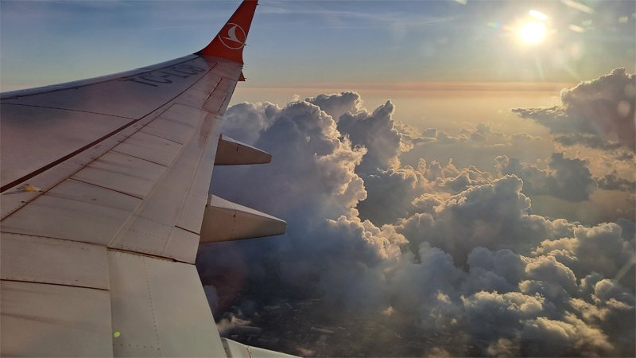

Predgovor
Na putu za Zanzibar slećemo na aerodrom u Istanbulu. Poznat mi je sa puta u Indiju i zato mi je drag. Sad već iskusno znam za vaučer za ručak i gde da prilegnemo. Prisećam se gde smo šopingovali ratluk i Dubai čokolade. I sve mi je milo.
Olbina me zbunila jer je gledala vreme zatvaranja gejta, a ne poletanja. Odem na štand Turkisha i tamo me upozore da postoje dva leta za Zanzibar. Na tabli pratim po broju leta, kad ono ne piše Zanzibar nego Kilimandžaro. Koliko se sećam, tamo idemo posle Zanzibara. Brzo šaljem poruku vodiču, potvrđuje da prvo idemo za Zanzibar. Ali gde mi je let za Zanzibar? Kupili su nam pogrešne karte! Trebalo je vremena da razjasnimo da taj let, na kome piše Kilimandžaro, zaista leti za Kilimandžaro, ali prvo sleće na Zanzibar, i tu mi silazimo.
Dobila sam na kraju mesto uz prozor. Da li sam ja srećković? Koja je verovatnoća da vas neko pita da se zamenite za mesto i nudi za zamenu mesto kraj prozora? Nisam mogla da verujem. Htela je da bude bliže momku.
Od Turkisha smo dobili vrlo neobičan, ali koristan poklon: čarape da se ne nazebe, na dar, i masku za oči za spavanje u avionu. Hrane nas svaki čas finom hranicom. Da li ću biti jedina koja se ugojila u Africi? (O da, bila sam.)
Rekoh Olbini: trebali smo poneti papriku, fore radi. Da sadimo u Africi. (Dečija pesmica: Išli smo u Afriku da sadimo papriku.) Ponela je bila Andrea i obećala mi, ali na kraju nije uspela da nađe seme. Plazmu vodiču smo ponele. Sećam se da se vodič Nikola u Indiji obradovao kad mi je ostala. Da li je to podsvesni mito za belu lavicu Nalu, koju ne mogu da dočekam da pomazim?

Ne propustite sledeću avanturu!
Kad Sandra krene u novi kraj sveta, vaš inbox prvi sazna. Prijavite se i stižu vam sve nove priče mejlom.